We implemented Bezier curves and surfaces using de Casteljau's algorithm, then built out mesh operations on triangle meshes with the half-edge data structure. This included area-weighted vertex normals for Phong shading, edge flip and edge split as local remeshing operations, and Loop subdivision for mesh upsampling. The most interesting takeaway was how Loop subdivision ties all the pieces together: flips and splits are just pointer reassignments on their own, but combined with the right vertex weighting they produce really smooth upsampled meshes. Debugging half-edge pointers was painful but it forced us to really understand mesh connectivity at a low level.
Section I: Bezier Curves and Surfaces
Part 1: Bezier curves with 1D de Casteljau subdivision
De Casteljau's algorithm evaluates a point on a Bezier curve through repeated linear interpolation. Given \( n \) control points and parameter \( t \in [0,1] \), each step computes \( n-1 \) intermediate points: \( p_i' = (1-t) \cdot p_i + t \cdot p_{i+1} \). You apply this recursively until one point remains, which lies on the curve at \( t \). Our evaluateStep loops through the input points, computes each lerp, and pushes them into a result vector. Each call does one level and the GUI calls it repeatedly to step down to the final point.
Below are each evaluation step on our custom 6-control-point curve. White = original control points, blue = intermediates, red = final point.
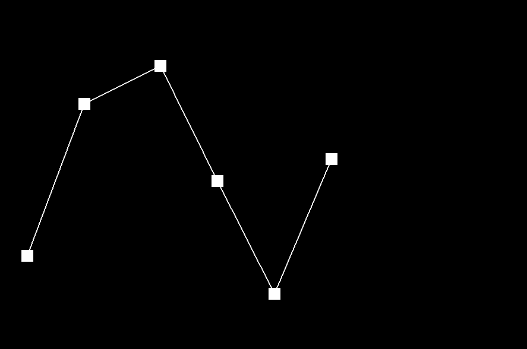
Step 0: 6 control points
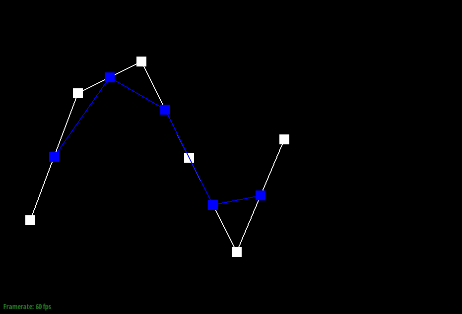
Step 1
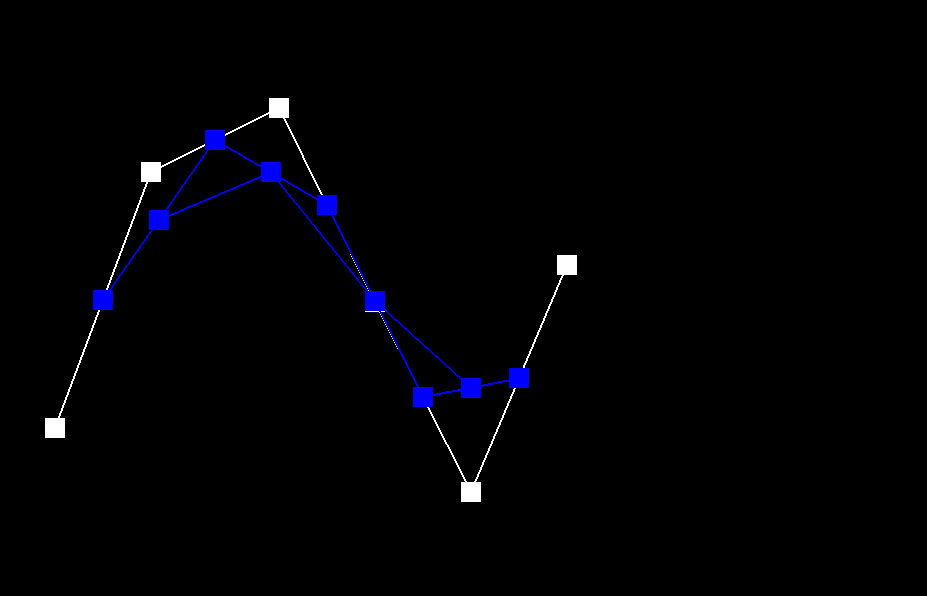
Step 2
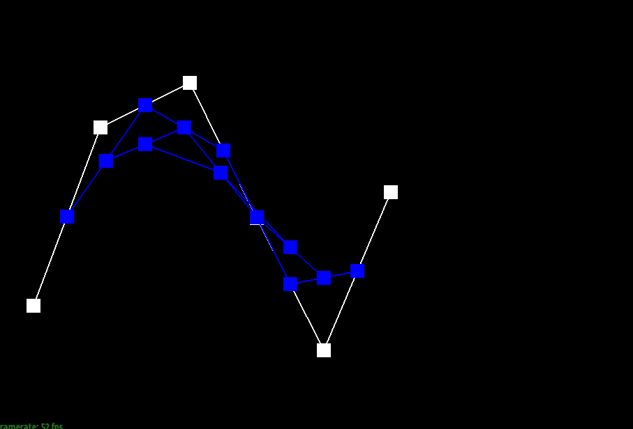
Step 3
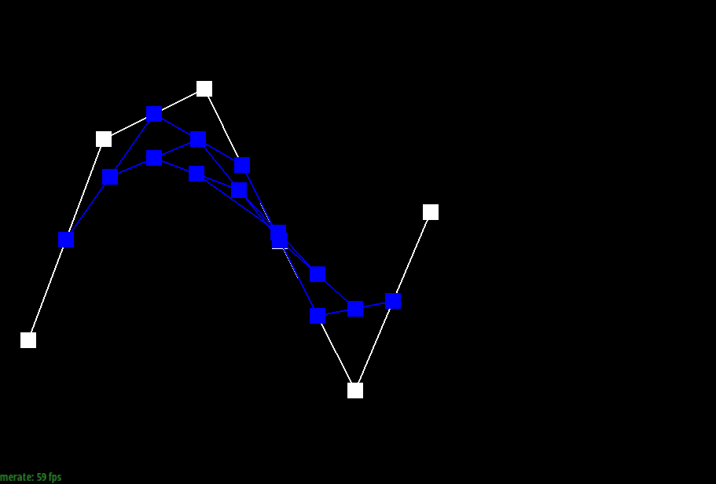
Step 4
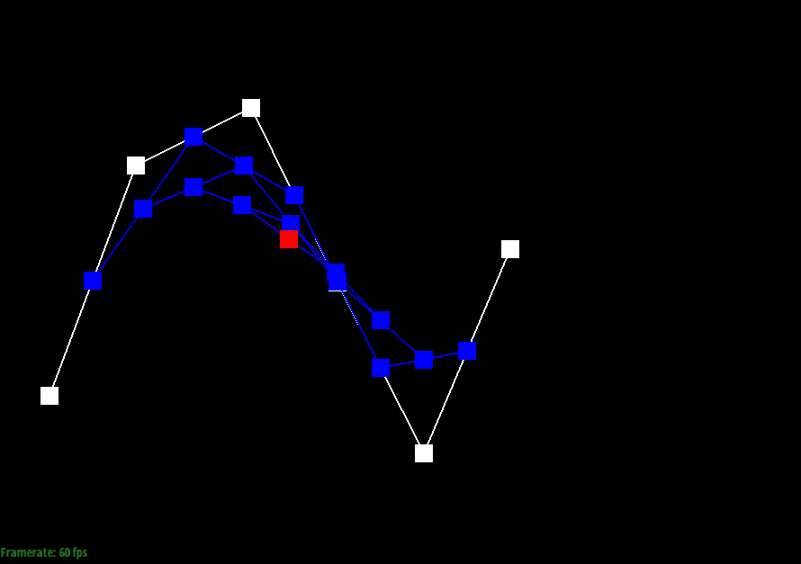
Step 5: final evaluated point
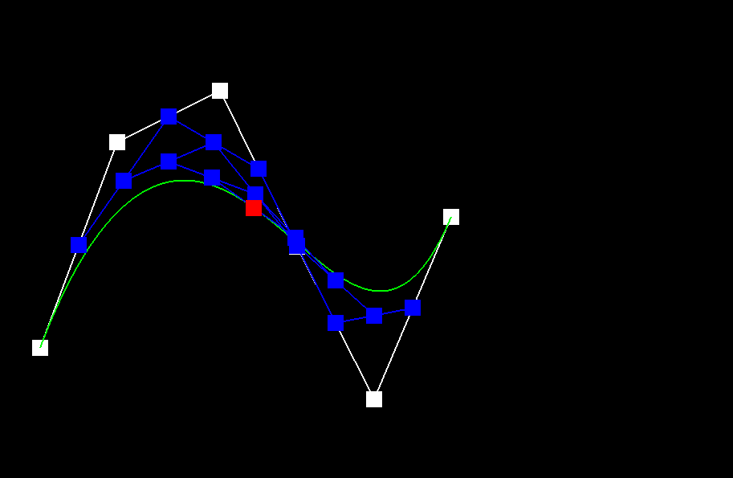
Completed curve (toggled with C)
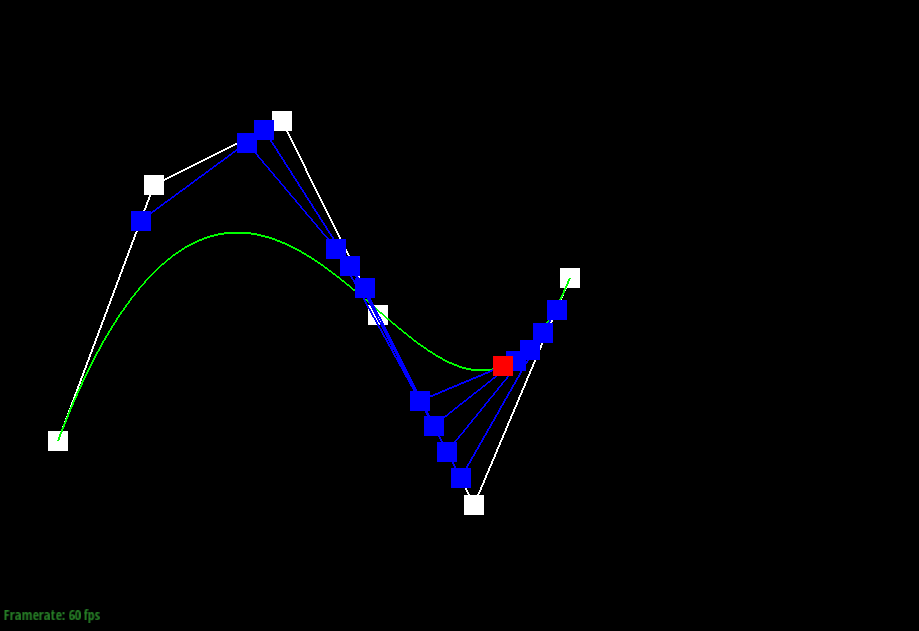
After moving points and changing t
Part 2: Bezier surfaces with separable 1D de Casteljau
De Casteljau extends to surfaces by doing two passes. Given an \( n \times n \) grid of 3D control points and parameters \( u, v \): first, for each row evaluate the Bezier curve at \( u \) to get one point per row. Then treat those \( n \) points as a new curve and evaluate at \( v \). We implemented evaluateStep (same lerp but for 3D with \( t \) as a parameter), evaluate1D (calls evaluateStep in a loop until one point remains), and evaluate (runs evaluate1D on each row with \( u \), then on the collected results with \( v \)).
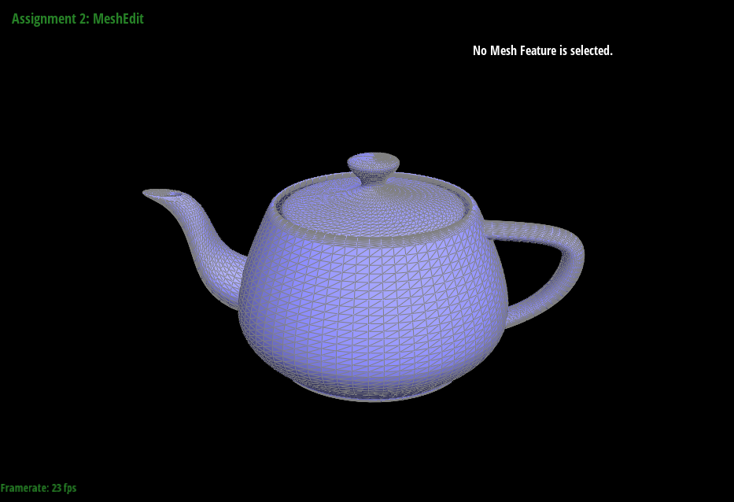
Teapot rendered from bez/teapot.bez
Section II: Triangle Meshes and Half-Edge Data Structure
Part 3: Area-weighted vertex normals
We iterate through all faces incident to a vertex using the half-edge structure (start at the vertex's halfedge, follow twin()->next() until we loop back). For each non-boundary face we grab its three vertex positions and compute the cross product of two edge vectors. The cross product magnitude is proportional to twice the triangle area, so it naturally gives us area weighting. We sum all cross products and normalize the result.
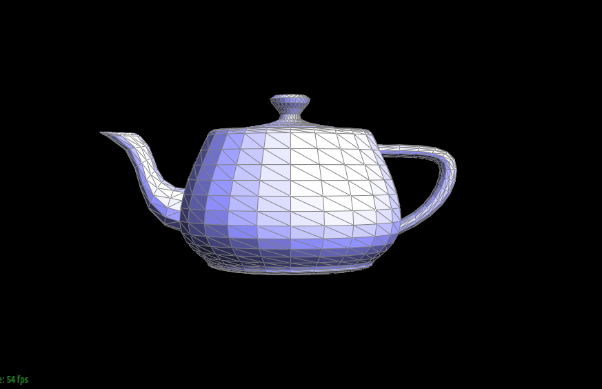
Flat shading (default)
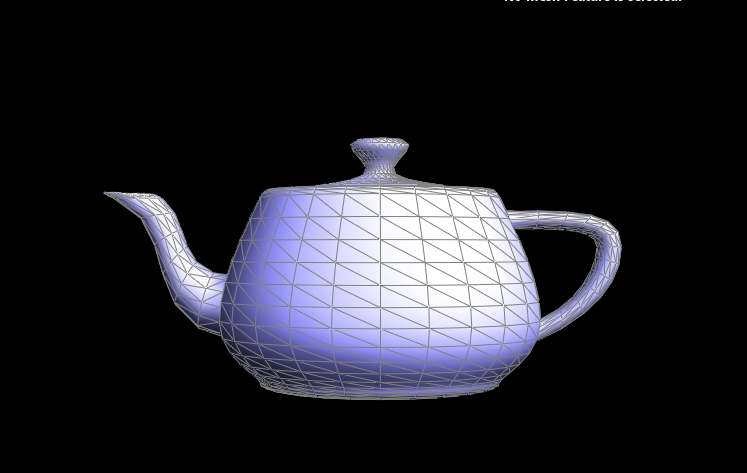
Phong shading (with vertex normals)
Part 4: Edge flip
A flip takes two triangles sharing an edge and reconnects the shared edge to the opposite vertices instead. No elements are created or deleted, just pointer reassignment. We collect all 6 halfedges, 4 vertices, the shared edge, and both faces, then use setNeighbors on every halfedge and reassign vertex/face halfedge pointers for the new configuration. Boundary edges return early.
The main debugging trick was drawing out labeled before/after diagrams on paper and writing each setNeighbors call to match. Missing one pointer causes weird holes so being systematic was key.
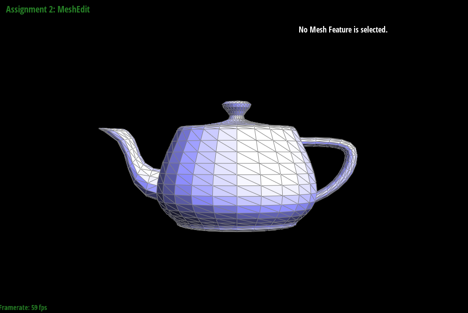
Before edge flips
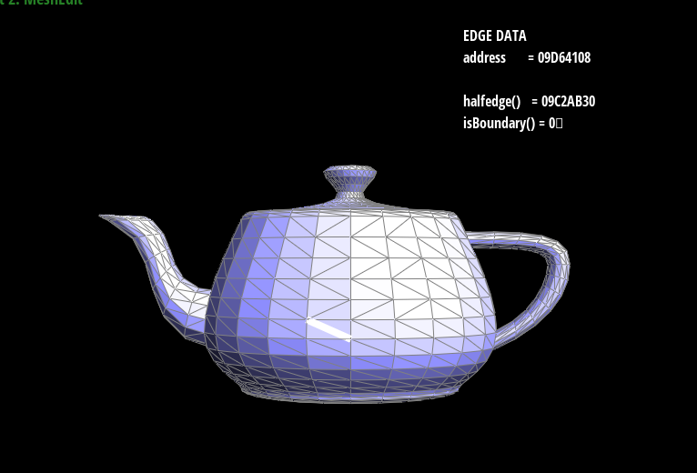
After edge flips
Part 5: Edge split
Edge split inserts a new vertex \( m \) at the midpoint of a shared edge and connects it to the opposing vertices, turning 2 triangles into 4. We create 1 new vertex, 3 new edges, 2 new faces, and 6 new halfedges. The original edge and two faces get reused. Same approach as flip: draw everything on paper, label all 12 halfedges, write out every setNeighbors call. We also set isNew flags on the new edges here since Loop subdivision needs that later.
This was the hardest part to debug. One wrong pointer and the mesh silently corrupts. The paper diagram approach saved us.
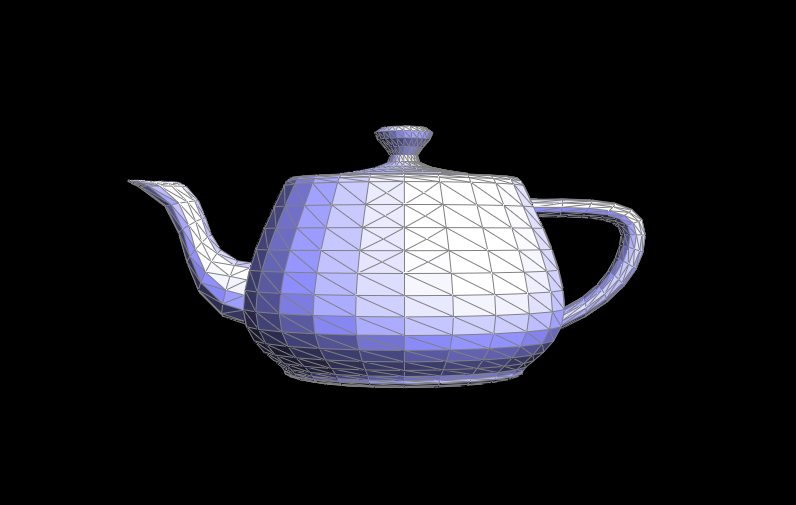
After edge splits
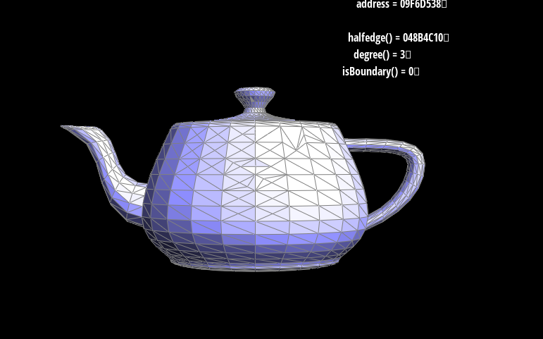
After splits and flips combined
Part 6: Loop subdivision for mesh upsampling
Loop subdivision upsamples a mesh by splitting every triangle into 4 and updating vertex positions with a weighting scheme. We compute positions first on the coarse mesh, then subdivide. The 5 steps: (1) compute new positions for old vertices using \( (1 - n \cdot u) \cdot \text{pos} + u \cdot \text{neighborSum} \) where \( u = 3/16 \) if \( n=3 \), else \( u = 3/(8n) \). (2) Compute new edge midpoint positions using \( 3/8(A+B) + 1/8(C+D) \). (3) Split every original edge. (4) Flip new edges connecting an old vertex to a new vertex. (5) Copy newPosition into position for all vertices.
The trickiest bug was the split iteration: splitting creates new edges in the list, so we skip any edge that's new or connects to a new vertex to avoid infinite loops.
After repeated subdivision the cube becomes slightly asymmetric because each face has a single diagonal oriented the same way. Since the weights depend on connectivity, this asymmetric triangulation produces asymmetric results. Pre-splitting the diagonal on each face makes the triangulation symmetric, which should produce a more symmetric subdivision. Sharp corners and edges get smoothed out quickly since the averaging pulls vertices toward neighbors.
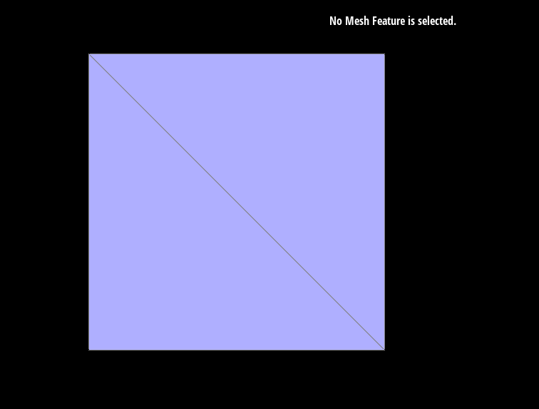
Cube face showing diagonal
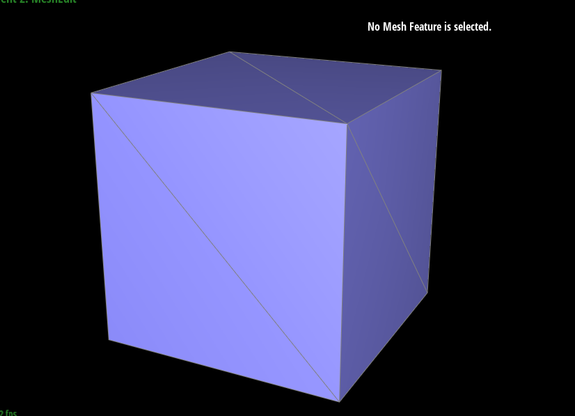
Original cube
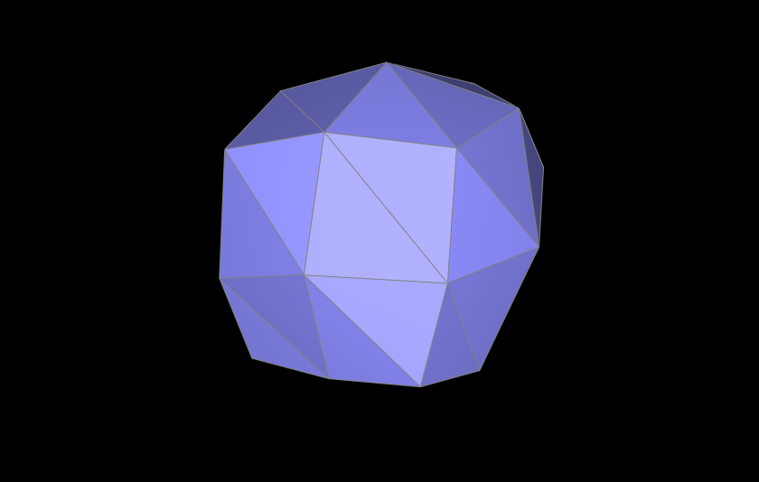
After 1 round of subdivision
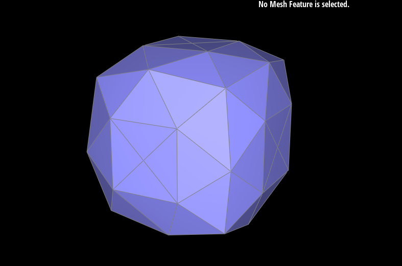
After multiple rounds (note asymmetry)
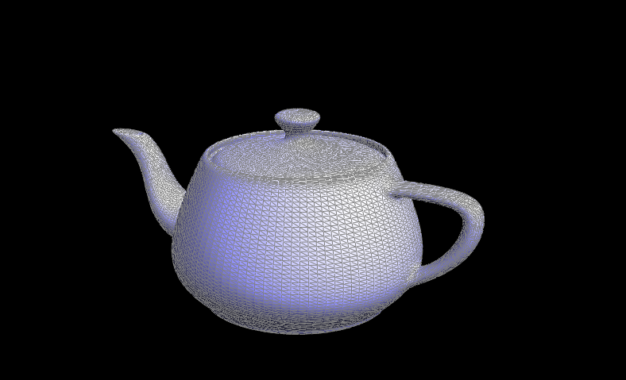
Teapot after Loop subdivision
(Optional) Section III: Potential Extra Credit - Art Competition: Model something Creative
We did not attempt extra credit for this assignment.